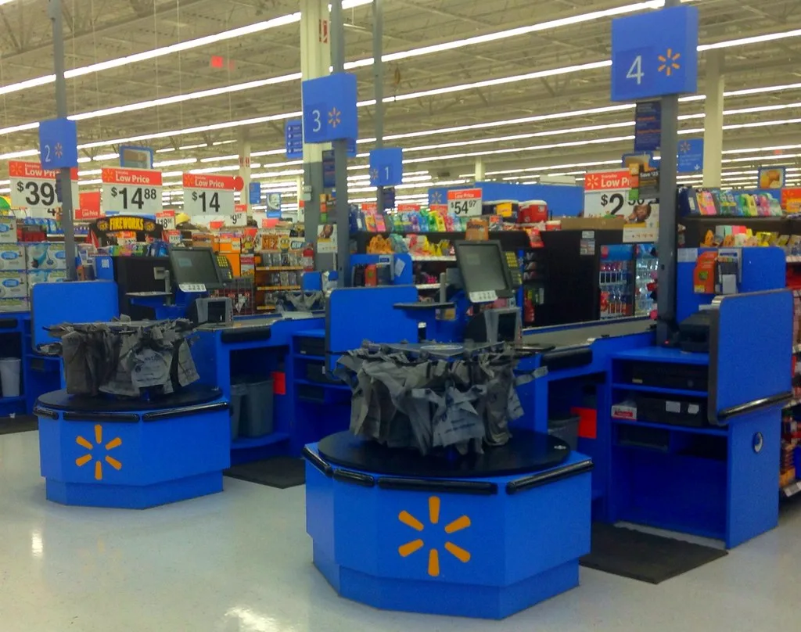

코스피 2%대 급락 출발…美 AI주 투매에 반도체지수 6%대 붕괴
23일 코스피가 전 거래일보다 2.36%(130.60포인트) 낮은 5403.17로 개장하며 또다시 큰 폭의 하락세를 보였다. 장 초반 매도세가 거세지며 지수는 한때 5305.98까지 밀려났고, 오전 9시 30분 기준으로는 전일 대비 177.58포인트(3.21%) 내린 5355.58에 거래되고 있었다. 전날 하루 동안의 급락에 이어 이틀 연속 가파른 내림세가 이어지면서 투자자들의 불안감도 커지고 있다.
직전 거래일인 22일 코스피는 201.89포인트(3.52%) 급락한 5533.77에 장을 마쳤다. 전날 강하게 반등했던 흐름을 하루 만에 고스란히 되돌린 셈이다. 대형 반도체주의 타격이 특히 컸는데, 삼성전자는 9000원(4.03%) 내린 21만4500원에, SK하이닉스는 7만1000원(5.49%) 내린 123만4000원에 거래를 마쳤다. 기관이 대규모 순매도에 나선 반면 개인과 외국인은 순매수를 이어갔지만 낙폭을 막아내지는 못했다.
이번 급락의 직접적인 배경은 미국 뉴욕증시에서 번진 AI 관련주 투매다. 나스닥지수는 2.60% 급락했고 반도체지수는 6%를 넘는 폭으로 떨어졌다. 메타는 AI 투자 확대에 따른 현금흐름 악화 우려로 7.0% 빠졌고, 테슬라는 내년도 투자지출(CAPEX) 가이던스를 낮추면서 AI·로보틱스 투자 축소 신호로 해석돼 3.1% 하락했다. 메모리 반도체 업체 마이크론은 6.3%, 엔비디아는 4.4% 각각 내려앉았다. 여기에 중동 지역의 지정학적 긴장이 다시 고조되며 국제유가가 오른 점도 위험자산 회피 심리를 자극한 요인으로 꼽힌다.
국내 증시에서도 반도체·2차전지·자동차·금융 등 업종을 가리지 않고 매물이 쏟아졌다. 삼성전자우가 4.43% 내렸고, SK스퀘어는 3.86%, LG에너지솔루션은 3.59% 하락했다. 삼성전기는 7.95%나 빠지며 전날 엔비디아향 패키지기판 장기 공급계약 발표로 얻었던 상승분 일부를 반납했다. 현대차도 4.48% 내렸고, KB금융(-3.86%)과 삼성생명(-3.31%) 등 금융주까지 약세를 피하지 못했다.

시장에서는 이번 하락을 두고 글로벌 AI 투자 붐에 대한 의구심이 다시 고개를 든 것으로 풀이한다. 그동안 반도체·AI 관련주가 단기간에 가파르게 올랐던 만큼, 빅테크 기업들의 지출 계획이나 현금흐름에 조금이라도 부정적인 신호가 나오면 차익실현 매물이 집중되는 양상이 반복되고 있다는 분석이다. 여기에 SK하이닉스 자회사인 솔리다임의 기업공개(IPO)가 중단된 점도 반도체주 반등을 제약하는 변수로 거론된다.
한편 이날 국회에서는 재정경제기획위원회가 한국은행과 한국수출입공사 등을 대상으로 국정감사를 진행하며 금융통화위원회의 기준금리 운용과 미래대응기금 등을 놓고 질의를 이어갔다. 증시 급락이 이틀째 이어지자 금융당국 수장들도 국감장에서 투자자 불안 확산에 대해 재차 우려를 표명한 것으로 전해졌다. 일부 의원들은 최근 코스피 변동성이 과도하게 커진 배경을 캐물으며 당국의 시장 안정화 대책 마련을 주문하기도 했다.
시장에서는 미국 반도체 대형주들의 추가 실적 발표와 연방준비제도의 통화정책 신호를 주시하며, 이번 하락이 단기 조정에 그칠지 추세 전환으로 이어질지를 가늠하고 있다. 특히 삼성전자와 SK하이닉스가 앞서 역대급 분기 실적을 발표했음에도 주가가 실적과 반대로 움직이는 모습을 보이면서, 실적 펀더멘털보다 글로벌 AI 투자 심리에 더 민감하게 반응하는 장세가 이어지고 있다는 분석도 나온다.